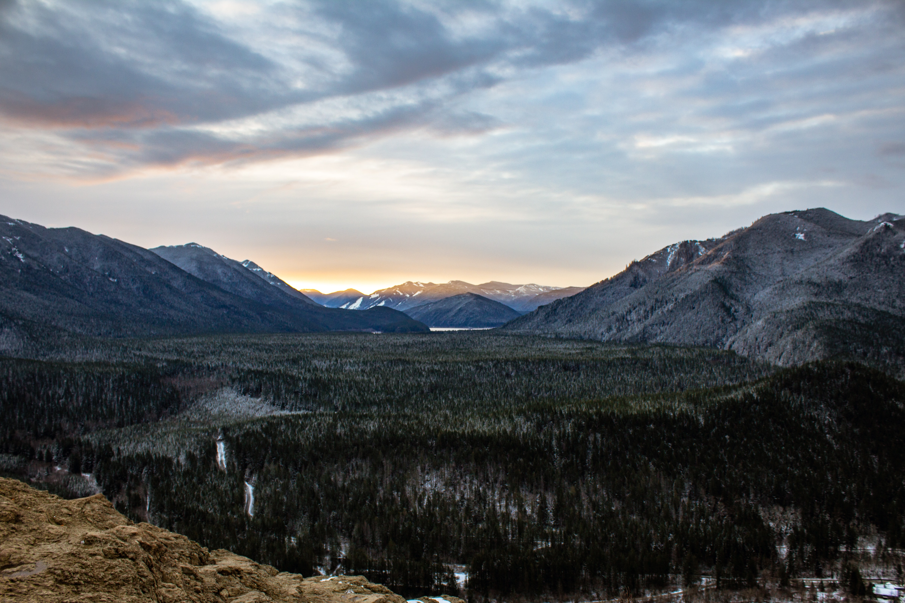
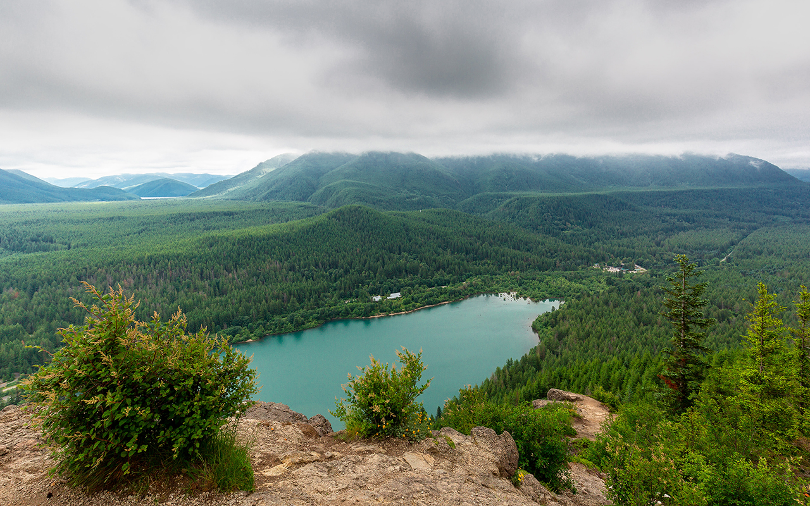
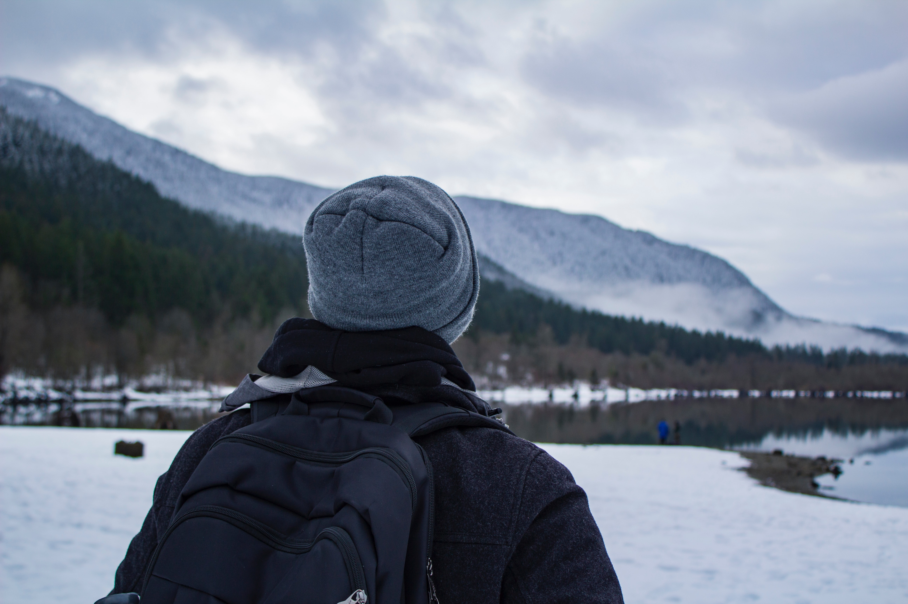
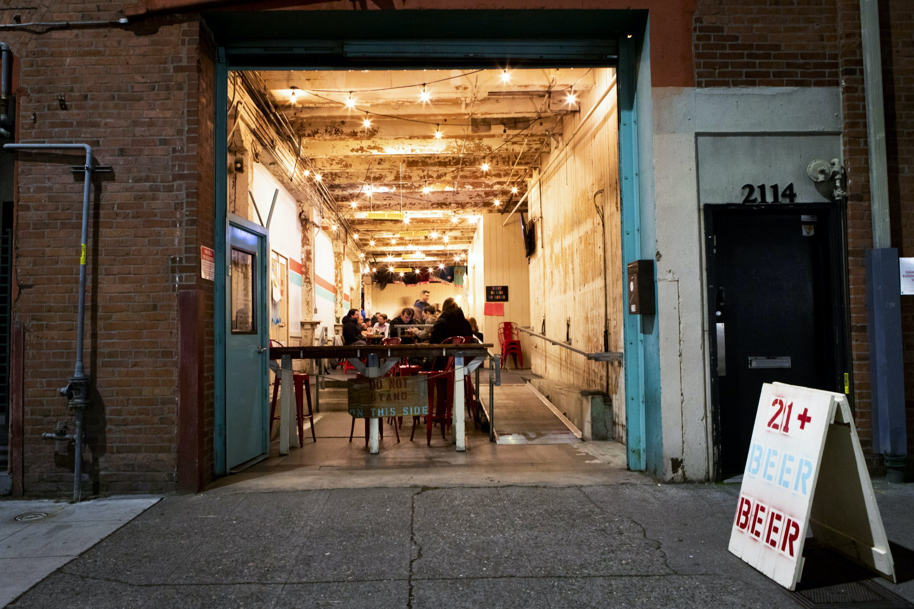

Located in the North Bend area of Washington State, Rattlesnake Ledge is most commonly known for the scenic views that hikers can see in just under 2 miles of the trailhead. This makes it a very popular spot amongst tourists and locals, so be prepared for some potentially busy trails.
Another great thing about Rattlesnake Ledge is that it is only 35 minutes away from Seattle. After a nice stroll through this wonderful scenery, kickback and relax in the Cloudburst Brewery.
Or, if you are trying to escape the city life, stay close by in an Airbnb or go camping at the Rattlesnake Ridge Recreation Area. No matter where you choose to stay, Rattlesnake Ledge is a site that you have to see for yourself.